Kaaba Empreendimentos · Indaiatuba/SP
Atualizado em 23/11/2026 · tabela Kaaba recebida em nov/2026 · pool de vendas de 26/10/2026 · Fabio Correia, CRECI 303686-F
Loteamento da Kaaba Empreendimentos na Rua João Otto Steffen, com 123 lotes em sete quadras, a partir de 300 m². Na tabela da Kaaba recebida em nov/2026 o metro quadrado custa R$ 1.335, e o pool de vendas de 26/10/2026 lista 33 lotes disponíveis. As fotos da loteadora mostram ruas asfaltadas, portaria e áreas de lazer construídas. Empreendimento já entregue.
A partir de R$ 400.500,00lote de 300 m² · R$ 1.335/m² · tabela Kaaba recebida em nov/2026 · confirme valor e disponibilidade no atendimento
Foto aérea do material da Kaaba Empreendimentos
O empreendimento
O Reserva da Colina é um loteamento da Kaaba Empreendimentos em Indaiatuba, com acesso pela Rua João Otto Steffen. O projeto urbanístico divide uma gleba de 120.759 m² em 123 lotes residenciais, distribuídos em sete quadras (A a G), com metragem mínima de 300 m²: os lotes típicos medem 12 x 25 m na quadra B e 10 x 30 m na quadra A.
Pelo quadro de áreas do projeto, 45,64% da gleba (55.111,72 m²) é área verde e área de preservação permanente; a APP, sozinha, tem 11.370,05 m². As ruas ocupam 20.045,34 m² e as áreas institucionais, 6.042,49 m².
As fotos da apresentação da Kaaba, de jun/2025, mostram ruas asfaltadas com guias, calçadas e postes de iluminação, o muro de divisa, a portaria e as áreas de lazer, além de uma casa em obra. Empreendimento já entregue.
lotes no projeto urbanístico
área mínima dos lotes
lotes disponíveis no pool de 26/10/2026
m² de área verde e APP, 11,4 mil deles de APP
Fotos
Fotos da apresentação da Kaaba Empreendimentos (jun/2025), que identifica as imagens do seu material como meramente ilustrativas. As perspectivas desenhadas estão mais abaixo, marcadas como imagem ilustrativa.
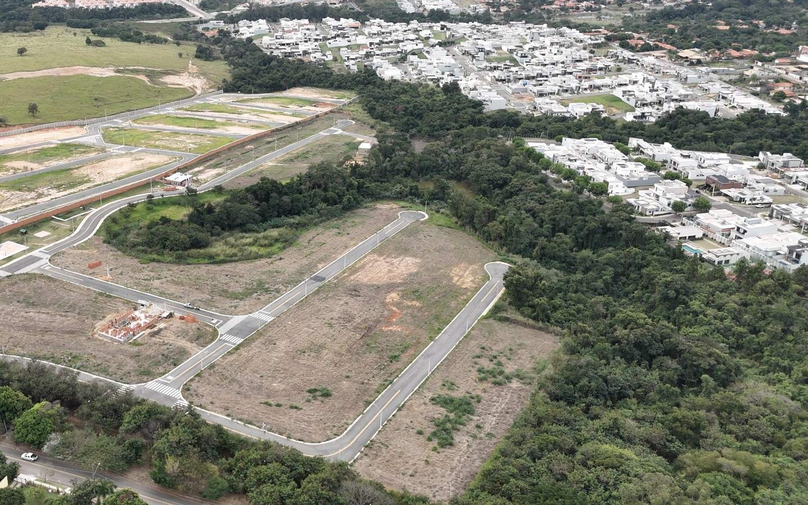
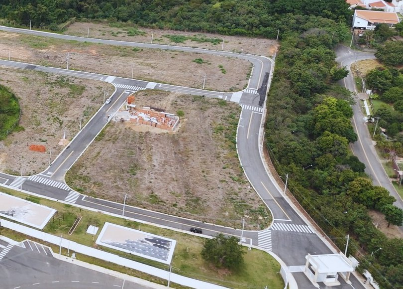
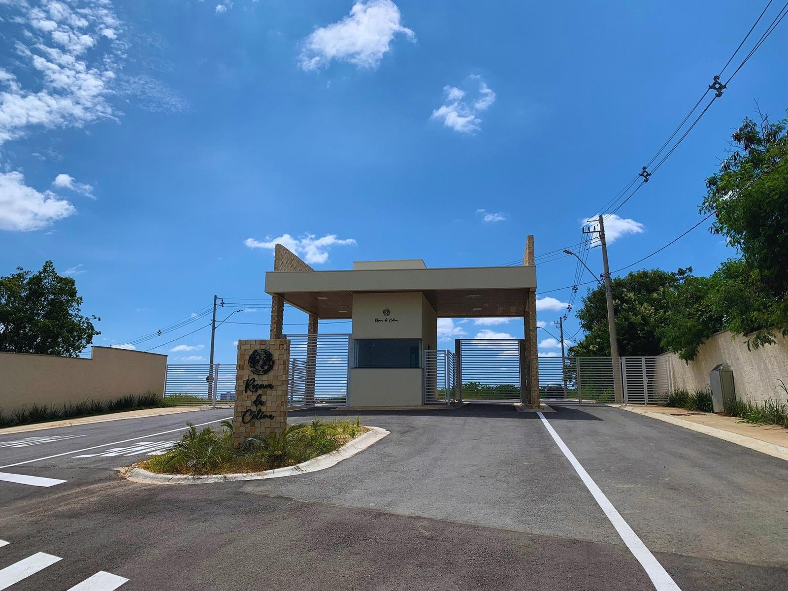
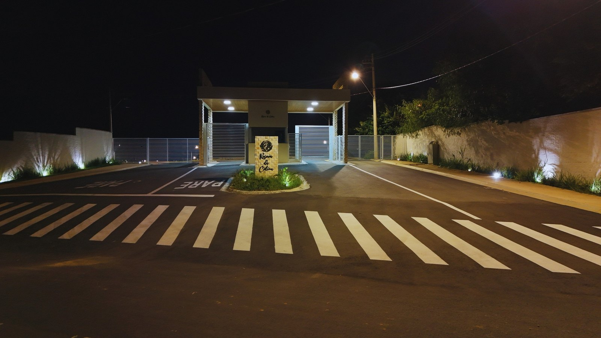
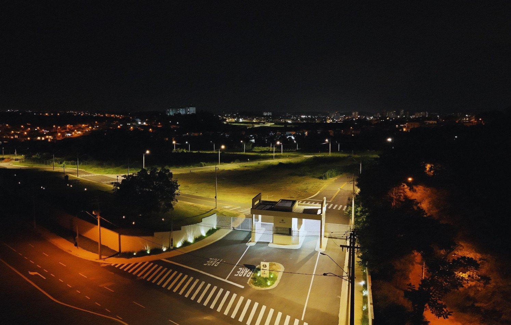
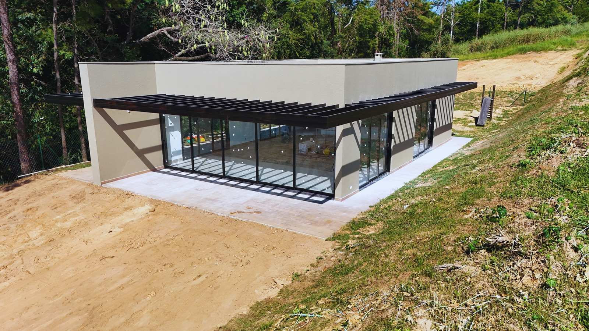
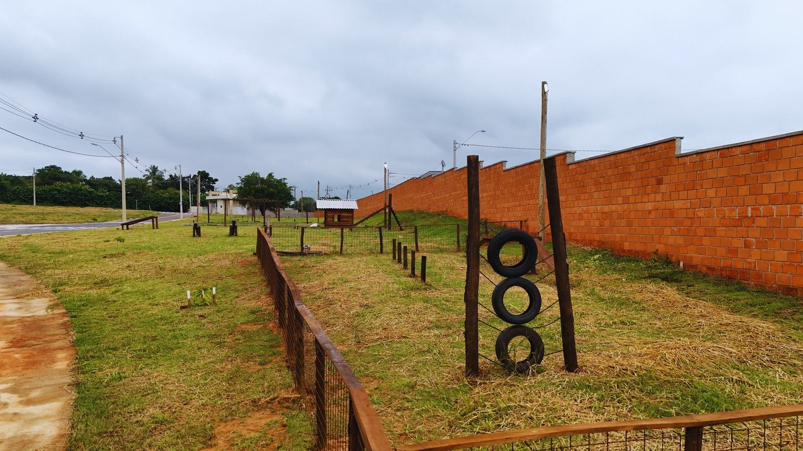
Lotes e preços
A tabela de vendas da Kaaba que recebemos em nov/2026 lista 81 lotes, todos a R$ 1.335 o metro quadrado: o valor depende só da área. A planilha não traz data impressa, e o pool de vendas de 26/10/2026 repete o mesmo valor do metro. O lote de 300 m² sai por R$ 400.500,00.
O pool de vendas da Kaaba, planilha gravada em 26/10/2026 (a data não vem impressa), lista 51 lotes: 33 marcados como disponíveis e 18 como “venda à vista”. A própria planilha avisa: “consultar disponibilidade do lote escolhido”. A tabela abaixo mostra os disponíveis que constam da tabela de preços.
| Área | Quadra e lote | Valor de tabela |
|---|---|---|
| 300,00 m² | 22 lotes nas quadras A, B, C e G | R$ 400.500,00 |
| 300,00 m² | Quadra E · lotes 8, 9, 12, 13 e 14 (com viela sanitária) | R$ 400.500,00 |
| 342,00 m² | Quadra C · lote 1 | R$ 456.570,00 |
| 382,06 m² | Quadra D · lote 6 | R$ 510.050,10 |
| 404,55 m² | Quadra E · lote 15 (com viela sanitária) | R$ 540.074,25 |
| 445,59 m² | Quadra C · lote 13 | R$ 594.862,65 |
| 458,03 m² | Quadra F · lote 1 | R$ 611.470,05 |
O pool marca 8 lotes da quadra E como “com viela sanitária”: os lotes 6, 8, 9 e 11 a 15. Seis deles (8, 9, 12, 13, 14 e 15) estão entre os disponíveis. O material não diz que restrição a viela impõe ao lote: pergunte antes de escolher.
O projeto urbanístico marca faixas non aedificandi em alguns lotes junto à área de preservação. Peça a planta do lote escolhido para ver se ela o atinge.
18 lotes do pool de 26/10/2026 trazem essa marcação, e 11 deles não constam da tabela de preços. A planilha não explica se são lotes vendidos à vista ou que só se vendem à vista: confirme no atendimento.
72 dos 123 lotes do projeto não aparecem no pool de 26/10/2026, e a planilha não diz se foram vendidos ou reservados.
O lote 11 da quadra C, de 300 m², aparece como disponível no pool, mas não consta da tabela de preços. Peça o valor no atendimento.
O lote 18 da quadra B, de 527,38 m², está na tabela recebida em nov/2026 por R$ 704.052,30, mas não aparece no pool de 26/10/2026.
A tabela não traz data impressa nem prazo de validade. Confirme valor e disponibilidade do lote no atendimento antes de qualquer proposta.
Pagamento
A condição da tabela é entrada de 15% do valor e saldo em 10, 15, 18, 20 ou 24 parcelas. O flyer da Kaaba fala em financiamento direto com a loteadora. A nota da tabela diz que as parcelas já incluem juros de 1% ao mês e que a correção é mensal, pelo índice da poupança.
Os valores de parcela impressos na planilha, porém, são só o saldo dividido pelo número de parcelas, sem os juros que a nota menciona. Por isso não publicamos valor de parcela: pergunte no atendimento o valor da parcela e a taxa de juros, e mandamos a simulação para o lote que interessa.
| Item | Valor |
|---|---|
| Valor de tabela (300,00 m² a R$ 1.335/m²) | R$ 400.500,00 |
| Entrada de 15% | R$ 60.075,00 |
| Saldo a parcelar | R$ 340.425,00 |
| Prazos do saldo | 10, 15, 18, 20 ou 24 parcelas |
| Juros (nota da tabela) | 1% ao mês, incluídos nas parcelas segundo a nota; os valores de parcela da planilha não os aplicam |
| Correção (nota da tabela) | mensal, pelo índice da poupança |
| Valor da parcela e taxa de juros | pergunte no atendimento |
Lazer
A lista segue a apresentação (jun/2025) e o flyer da Kaaba. Nas fotos da apresentação aparecem a portaria, o salão de festas, a quadra de beach tennis, o pet place e a área zen; o playground não tem foto própria (aparece em perspectiva, e um escorregador surge ao fundo da foto do salão).
A taxa mensal, a existência de associação e as regras de uso das áreas comuns não constam do material recebido. Confirme no atendimento.
Perspectivas
Perspectivas do material da loteadora: são desenhos, não fotos. Acabamento, mobiliário e vegetação podem ser diferentes do que foi construído; as fotos do local estão mais acima.
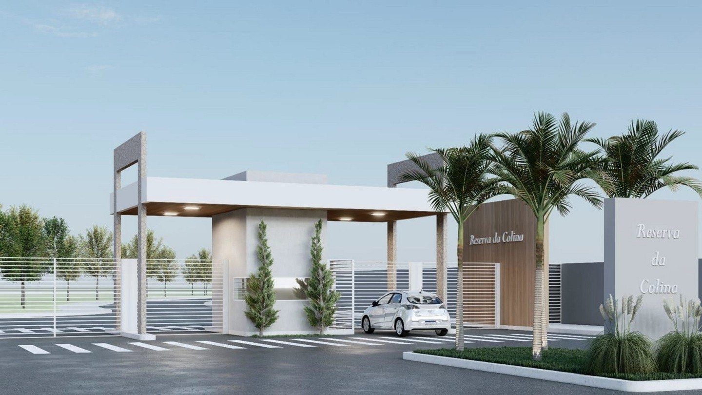
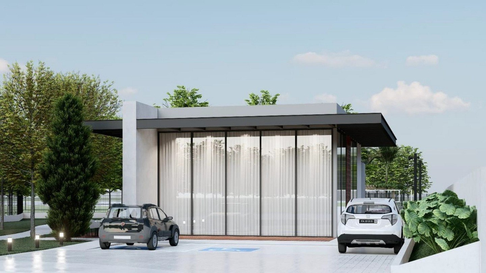
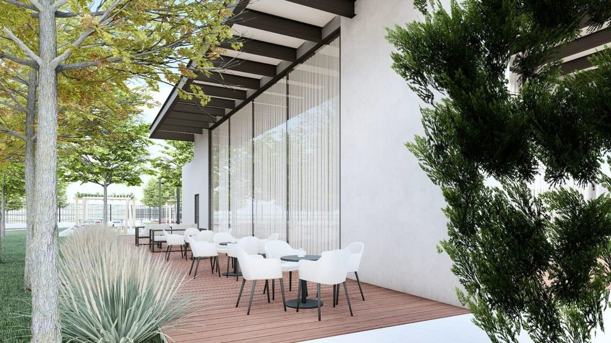
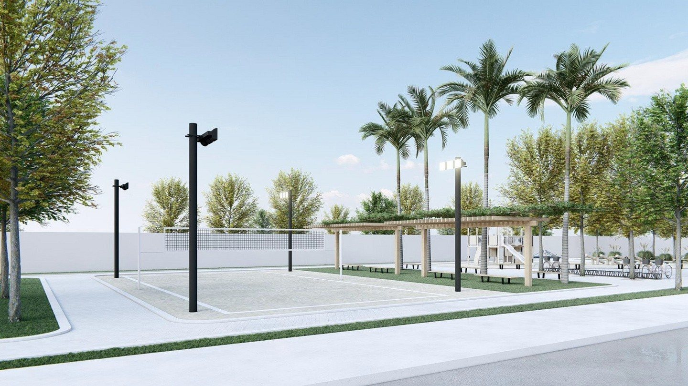
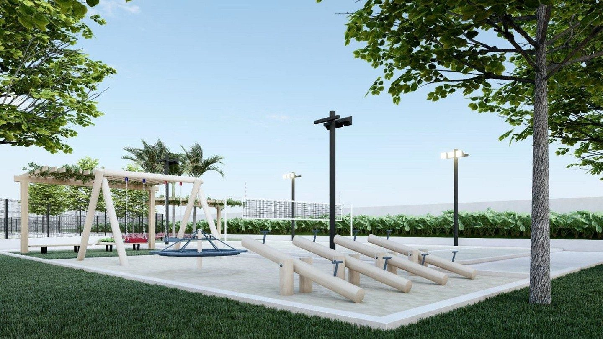
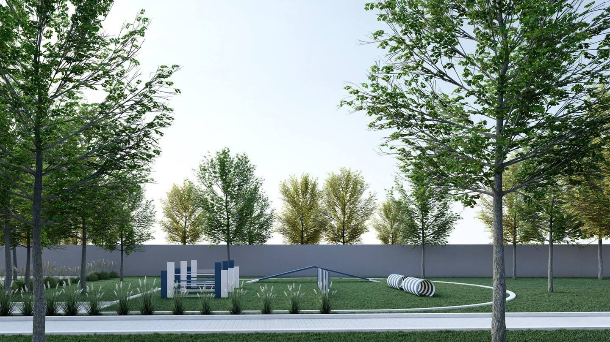
Documentação
O flyer da Kaaba cita, no rodapé, o nº 339.761 da matrícula nº 19.533 do Cartório de Registro de Imóveis de Indaiatuba; o texto não deixa claro se esse número é o registro do loteamento na matrícula (R.x) ou um protocolo. O material recebido não traz o certificado do Graprohab nem o decreto de aprovação.
O projeto urbanístico é um projeto de loteamento, com as ruas, as áreas institucionais e a área verde como áreas públicas. As fotos mostram portaria com portões e muro, mas o material não usa as palavras condomínio, fechado ou associação, nem informa a base legal do controle de acesso ou uma taxa mensal.
As áreas citadas nesta página vêm do projeto urbanístico recebido da Kaaba, um arquivo de abr/2019 sem carimbo nem número de aprovação. O material não informa o CNPJ de quem vende, e esse projeto traz outra empresa como proprietária da gleba.
Antes de qualquer proposta, peça a certidão de matrícula atualizada e o CNPJ de quem vende, e confirme quem é o loteador e quem assina o contrato.
Segundo o flyer: nº 339.761 da matrícula nº 19.533 do Cartório de Registro de Imóveis de Indaiatuba. Peça a certidão para conferir.
Loteamento com portaria e muro (fotos da loteadora); regime de acesso a confirmar.
Recuos, gabarito e taxa de ocupação não constam do material. Peça o regulamento antes de fechar.
Ficha técnica
Localização
O acesso ao Reserva da Colina é pela Rua João Otto Steffen, em Indaiatuba; o material da Kaaba não informa o bairro nem o número da portaria. Pelo projeto urbanístico, do outro lado da rua fica o loteamento Altos da Bela Vista.
Segundo o flyer da loteadora, o empreendimento fica entre a Estrada Didi Martins e a Rota dos Cavaleiros, a 4 minutos da Avenida do Parque Ecológico. O mapa abaixo mostra o local cadastrado no Google.
Pela Rua João Otto Steffen; número e CEP não informados no material
O loteamento Altos da Bela Vista fica do outro lado da rua, conforme o projeto urbanístico
Entre a Estrada Didi Martins e a Rota dos Cavaleiros; 4 minutos até a Avenida do Parque Ecológico
Perguntas frequentes
Na tabela da Kaaba recebida em nov/2026 o metro quadrado custa R$ 1.335 em todos os 81 lotes listados. O lote de 300 m² sai por R$ 400.500,00; entre os marcados como disponíveis no pool de vendas de 26/10/2026, o maior é o lote 1 da quadra F, de 458,03 m², por R$ 611.470,05. A tabela não traz data impressa: confirme valor e disponibilidade no atendimento.
Entrada de 15% do valor e saldo em 10, 15, 18, 20 ou 24 parcelas, com financiamento direto com a loteadora, segundo a tabela e o flyer da Kaaba. A nota da tabela diz que as parcelas já incluem juros de 1% ao mês e que a correção é mensal, pelo índice da poupança, mas os valores de parcela da planilha são só o saldo dividido pelo prazo. Pela tabela da Kaaba recebida em nov/2026, no lote de 300 m² a entrada é de R$ 60.075,00 e o saldo, de R$ 340.425,00. Pergunte o valor da parcela e a taxa de juros no atendimento: confirmamos os dois com a Kaaba antes de qualquer proposta.
O projeto tem 123 lotes. O pool de vendas da Kaaba, planilha gravada em 26/10/2026 (sem data impressa), lista 51: 33 marcados como disponíveis e 18 como “venda à vista”, marcação que a planilha não explica. Os outros 72 lotes do projeto não aparecem no pool, e a planilha não diz por quê. A disponibilidade muda a cada venda, e o próprio pool pede para consultar a disponibilidade do lote escolhido: confirme no atendimento.
A partir de 300 m². Pelo projeto urbanístico, os lotes típicos medem 12 x 25 m na quadra B e 10 x 30 m na quadra A. Dos 33 lotes marcados como disponíveis no pool de 26/10/2026, 28 têm 300 m² e os outros vão de 342,00 a 458,03 m². O maior da tabela, de 527,38 m², não aparece no pool.
O projeto urbanístico é de loteamento, com as ruas e as áreas verdes e institucionais como áreas públicas. As fotos da Kaaba mostram portaria com portões e muro, mas o material não usa as palavras condomínio, fechado ou associação, nem informa a base legal do controle de acesso, se existe associação ou o valor de uma taxa mensal: confirme no atendimento antes de decidir.
O flyer da Kaaba cita o nº 339.761 da matrícula nº 19.533 do Cartório de Registro de Imóveis de Indaiatuba, que no projeto urbanístico aparece como a matrícula da gleba. O material não informa se esse número é o registro (R.x) do loteamento ou um protocolo. O projeto urbanístico recebido (arquivo de abr/2019) não tem carimbo de aprovação, e o material não traz Graprohab nem decreto de aprovação. Peça a certidão de matrícula atualizada antes de assinar.
Portaria, salão de festas, espaço pet, playground, quadra de beach tennis e área zen, segundo a apresentação e o flyer da Kaaba. Nas fotos da apresentação de jun/2025 aparecem a portaria, o salão de festas, a quadra de beach tennis, o pet place e a área zen; o playground não tem foto própria na apresentação (aparece em perspectiva ilustrativa, e um escorregador surge ao fundo da foto do salão).
Na Rua João Otto Steffen, em Indaiatuba/SP. O material não informa o bairro nem o número; pelo projeto urbanístico, do outro lado da rua fica o loteamento Altos da Bela Vista. Segundo o flyer da Kaaba, o empreendimento fica entre a Estrada Didi Martins e a Rota dos Cavaleiros, a 4 minutos da Avenida do Parque Ecológico.
Antes de comprar
No pool de 26/10/2026, com os valores da tabela recebida em nov/2026: C-1, 342,00 m², R$ 456.570,00; D-6, 382,06 m², R$ 510.050,10; E-15, 404,55 m², R$ 540.074,25 (com viela sanitária); C-13, 445,59 m², R$ 594.862,65; e F-1, 458,03 m², R$ 611.470,05. O maior da tabela, o B-18, de 527,38 m² (R$ 704.052,30), não aparece no pool: confirmamos com a Kaaba se ainda está à venda.
Sim. A Kaaba informou em 16/11/2026 que o empreendimento já foi entregue e que o comprador pode construir. O número e a data do termo de verificação de obras não constam no material: peça a cópia antes de assinar.
Nas fotos da Kaaba de junho/2025, a portaria está pronta, o salão de festas está construído (sem mobília na foto), o pet place e a área zen estão implantados e a quadra de beach tennis está em obra. O playground aparece só em perspectiva. O material não diz se o lazer é entregue equipado nem quando.
A gleba tem 120.759 m², com 123 lotes em 7 quadras: A com 11, B com 32, C com 17, D com 21, E com 15, F com 4 e G com 23. Os lotes ocupam 39.559,45 m² e as ruas, 20.045,34 m².
55.111,72 m², 45,64% da gleba, são área verde e área de preservação permanente (APP); a APP sozinha tem 11.370,05 m². O material de venda arredonda para 55 mil m².
O projeto reserva 6.042,49 m² de área institucional: 3.927,07 m² para equipamento comunitário e 2.115,42 m² para equipamento urbano. O material não diz o que será construído ali.
O projeto urbanístico tem ruas de 14, 15 e 25 metros de largura, somando calçada e pista. As fotos de junho/2025 mostram as ruas asfaltadas, com guias, calçadas e postes.
Em geral, é uma faixa reservada para a passagem de rede de esgoto ou de água de chuva. O pool de 26/10/2026 marca 8 lotes da quadra E com viela sanitária (6, 8, 9 e 11 a 15); seis deles estão disponíveis. O material não diz que restrição isso traz: pergunte antes de escolher um deles.
Sim. O projeto urbanístico marca faixas não edificáveis (non aedificandi) em alguns lotes junto à área de preservação. Peça a planta do lote escolhido para ver se a faixa o atinge.
A apresentação da Kaaba descreve os lotes como residenciais, e o projeto não separa lotes comerciais. As regras sobre comércio, home office ou mais de uma casa por lote não constam no material: peça o regulamento.
O mapa do book e do folheto da Kaaba cita a Rodovia João Ceccon, a Rua Hércules Florence, a Rua Laércio Longatti e a Avenida Eng. Fábio Roberto Barnabé como acessos da região.
O mapa do book marca o Colégio Objetivo como referência, junto com a Prefeitura e o Parque Ecológico, mas não dá distâncias.
Sim: o Terras de Obwalden, também da Kaaba, no Bairro Bela Vista, a cerca de 1,5 km em linha reta (medida nossa entre os pontos do Google Maps, 22/11/2026), com lotes a partir de R$ 435.000 (300 m², tabela recebida em nov/2026).
Sim, da Kaaba: o Jardim Residencial Belle Vista, no Mato Dentro, a partir de R$ 360.000 (300 m²), e o Jardim Siena, em Itaici, a partir de R$ 300.000 (250 m²), pelas tabelas recebidas em nov/2026.
O Alpnach Residence, da Dominium, tem lotes a partir de R$ 510.000 (300 m²), pela tabela de nov/2026.
O folheto e a apresentação trazem a Kaaba Empreendimentos na realização e na incorporação, mas o projeto urbanístico traz outra empresa como proprietária da gleba, e o material não informa o CNPJ de quem vende. Antes de qualquer proposta, peça a certidão de matrícula atualizada e confirme quem assina o contrato.
Para a reserva e o contrato, o padrão é: RG e CPF (ou CNH), certidão de nascimento (solteiro) ou de casamento (casado), comprovante de endereço atualizado e comprovante de renda dos 3 últimos meses. Se for usar financiamento da Caixa (terreno e construção), entram também os 2 últimos holerites, a declaração do Imposto de Renda com o recibo de entrega, a Carteira de Trabalho (pode ser a digital), o extrato do FGTS tirado no app FGTS e, se você for casado, os documentos do cônjuge. Cada loteadora ou banco pode pedir algum documento a mais: a lista final a gente confirma na reserva.
Em Indaiatuba, o ITBI é de 2% sobre a base de cálculo até 15.000 UFESP (R$ 576.300,00 em 2026) e de 2,5% só na parte que passar disso (Lei Complementar municipal 102/2023, art. 137, segundo a página de perguntas frequentes do ITBI da Prefeitura, consultada em 22/11/2026). No exemplo da Prefeitura, uma base de R$ 400.000,00 dá R$ 8.000,00 de imposto. Ele é pago quando a escritura ou o contrato definitivo vai para o cartório; na compra parcelada direto com a loteadora, o contrato diz quando a escritura é passada. A guia da Prefeitura pode ser parcelada em até 4 vezes, mas o registro na matrícula só sai com tudo quitado; mais detalhes em ITBI, escritura e registro em Indaiatuba.
Só o lote, não: a Caixa não permite usar o FGTS para comprar terreno sem construção (página “FGTS para casa própria”, consultada em 22/11/2026). O FGTS pode entrar se você financiar o terreno junto com a construção da casa pela linha “Aquisição de terreno e construção” da Caixa, se a loteadora aceitar essa forma de pagamento, com as regras de sempre: 3 anos de FGTS, nenhum financiamento ativo no SFH e não ter imóvel residencial na cidade onde mora ou trabalha. Depois, o FGTS também pode ajudar a construir a casa, mas só com o terreno já registrado no seu nome; na compra parcelada com a loteadora, isso só acontece com a escritura.
Pela Lei 6.766/1979, art. 32-A (incluído pela Lei 13.786/2018; texto do planalto.gov.br consultado em 22/11/2026), a loteadora devolve o que você pagou, corrigido pelo índice do contrato, podendo descontar multa e despesas de até 10% do valor atualizado do contrato, além de outros itens que a lei lista, como IPTU e taxas do lote em aberto e, se você já tinha a posse, um valor pelo uso. A devolução é em até 12 parcelas mensais, que começam até 180 dias depois do prazo de conclusão das obras, se o loteamento ainda está em obra, ou até 12 meses depois do desfazimento, se as obras já terminaram. Essa regra vale para o compromisso de compra e venda; contrato com alienação fiduciária segue a Lei 9.514/1997 (art. 32-A, § 3º). O quadro-resumo do contrato tem de mostrar as consequências da desistência em destaque (art. 26-A, V).
Patrimônio de afetação é regra de incorporação (prédios e casas em condomínio); no loteamento, a proteção é o registro. A Lei 6.766/1979 proíbe vender lote de loteamento não registrado (art. 37) e, para registrar, a loteadora entrega certidões e, se as obras não estiverem prontas, um cronograma de até 4 anos com garantia de execução das obras (art. 18; texto do planalto.gov.br consultado em 22/11/2026). O processo do loteamento no cartório pode ser examinado por qualquer pessoa, sem custo (art. 24). Antes de assinar, a gente pede com você a certidão de matrícula do lote.
Na compra parcelada direto com a loteadora, cada empresa tem o seu critério de análise de renda e cadastro; a gente confirma com a loteadora antes da proposta. Se for financiar pela Caixa (terreno e construção), a prestação não pode passar de 30% da renda familiar mensal bruta (página “Aquisição de terreno e construção” da Caixa, consultada em 22/11/2026). O valor aprovado sai na simulação e é sujeito a análise de crédito.
Dá. Cada loteadora tem o seu critério; o mais comum é pedir conta em banco no Brasil, e a gente confirma com a loteadora antes de você assinar. Fazemos a visita por vídeo. O passo a passo está em Comprar imóvel na planta morando fora e, em inglês, em Buying property in Indaiatuba from abroad.
Mandamos a tabela com quadra, metragem e valor, confirmamos com a Kaaba quais lotes seguem disponíveis e simulamos a entrada de 15% com o saldo em até 24 parcelas.
Todos os lançamentos em Indaiatuba